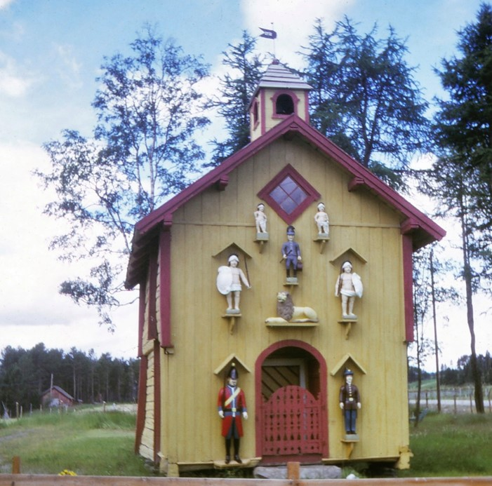

Fast Utstilling

Våningshus
Våningshus fra tidlig 1800-tallet. Bygningen er påvirket av trøndersk byarkitektur.
Det utvendig panelet, den karakteristiske dørportalen vindusinnrammingene, gir assosiasjoner til Stiftsgården i Trondheim.
På nettutstillingen vår får du et glimt av utstillingen. Klikk her!
Midlertidige Utstillinger
Kombinert smie og fengsel
Tussudal-gård fungerte som lensmannsgård i generasjoner fra 1823-1929.

Stabbur
Stabbur fra slutten av 1800-tallet. Figurer skåret ut av folk som har sittet i arresten på gården.
Runestein
Runestein datert til merovingertiden med urnordiske runer. Inskripsjonene er ikke tydet. Motiv er muligens en ulykke i en smide.